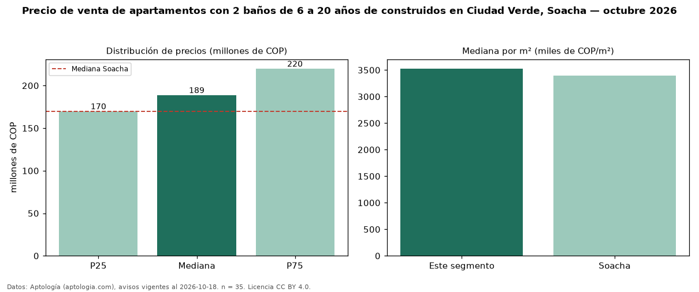

Precio de venta de apartamentos con 2 baños de 6 a 20 años de construidos en Ciudad Verde, Soacha — octubre 2026
Con 35 avisos vigentes, el precio mediano de apartamentos con 2 baños de 6 a 20 años de construidos en venta en Ciudad Verde, Soacha es COP 189 millones. Frente a la mediana de los apartamentos con 2 baños en venta de Ciudad Verde (COP 180 millones, n = 110), queda 5 % por encima; este segmento reúne el 32 % de esos avisos. Por metro cuadrado, la mediana es COP 3,53 millones/m² (n = 34), 4 % por encima de los apartamentos con 2 baños en venta de Ciudad Verde (COP 3,39 millones/m²). El área mediana anunciada es 56 m². El segmento con más oferta es el de 3 o más habitaciones (33 avisos, mediana COP 190 millones). La administración mediana declarada es COP 125.700 al mes (n = 22). El estrato más frecuente es 3 (94 % de los avisos con estrato). La mediana de todos los apartamentos en venta de Soacha es COP 170 millones (+11 % de diferencia). Datos: Aptología (aptologia.com), CC BY 4.0 — https://www.aptologia.com/venta/soacha/ciudad-verde. Archivos: PDF, CSV con las cifras y gráfica PNG.

| Avisos únicos | 35 |
|---|---|
| Percentil 25 | COP 170.000.000 |
| Mediana | COP 189.000.000 |
| Percentil 75 | COP 220.000.000 |
| Mediana por m² | COP 3.528.161 |
Fuente: avisos vigentes de portales inmobiliarios recopilados por Aptología, deduplicados (mínimo 30 avisos únicos por celda). Precios pedidos, no cerrados. Fecha: 2026-10-18.